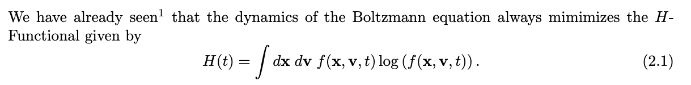
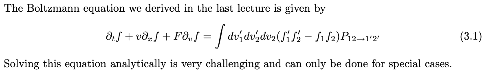
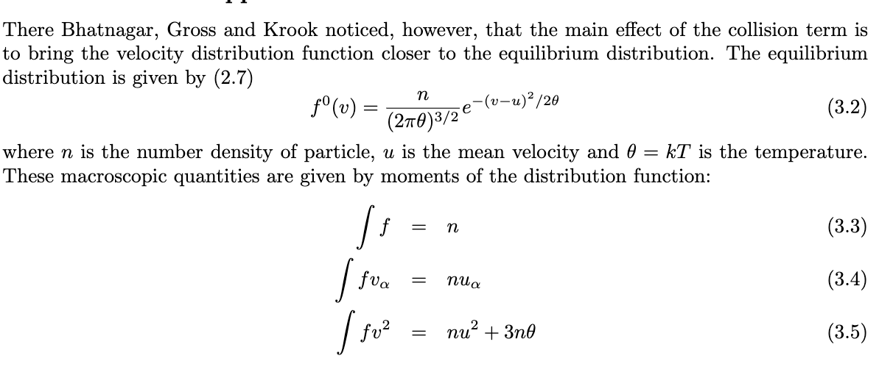
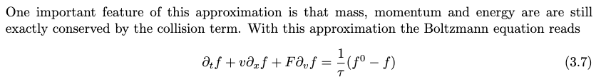
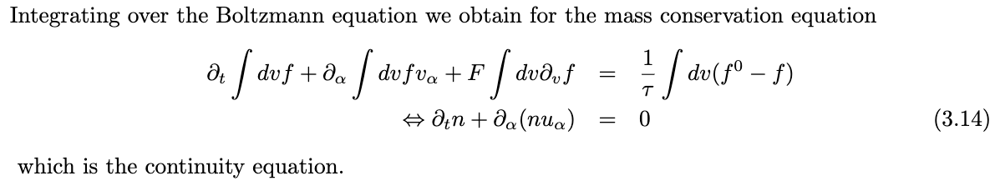
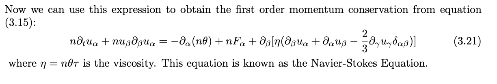
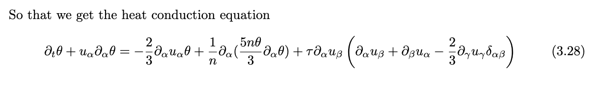
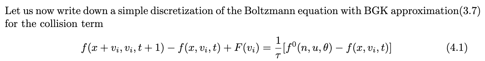
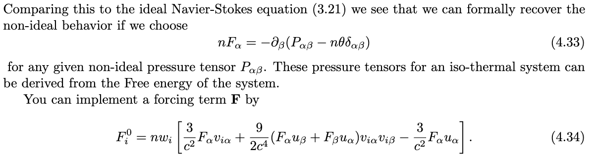

Hierarchy in wiki:
LBbook.pdf
The Lattice Boltzmann Method Principles and Practice.pdf
LBM: Principles and practice
Introduction
优点：可以模拟相当Noisy的空气动力学。LBbook.pdf - p7 - it was shown that the lattice gas methods could be used to simulate(rather noisy) hydrodynamics.
Applications：LBbook.pdf - p7 - turbulence, multi-component and multi-phase flows as well als additional applications, including simulations of the Schr ̈odinger equation.
Boltzmann Eqn
LBbook.pdf - p9 - LBbook-P9-20231014202728

Derivation of the hydrodynamic eqn from boltzmann eqn
LBbook.pdf - p11 - e macroscopic equations of motion are simply the conservation equations for continuous field
The boltzmann eqn
LBbook.pdf - p11 - LBbook-P11-20231014203009

BGK approximation
LBbook.pdf - p11 - BGK模型给出的稳态分布方程

LBbook.pdf - p12 - LBbook-P12-20231022093150

Mass conservation
由Boltzmann 方程自然给出：
LBbook.pdf - p12 - LBbook-P12-20231014203531

Momentum conservation
LBbook.pdf - p13 - LBbook-P13-20231014203715

可以直接得到NSE
Energy conservation
LBbook.pdf - p14 - LBbook-P14-20231014203757

热传导方程
LB
Lattice boltzmann eqn.
LBbook.pdf - p17 - LBbook-P17-20231014203832

即使是BGK模型简化，也能够求解流体。LBbook.pdf - p17 - the hydrodynamic limit of this this discretized version of the Boltzmann are still the well known equations for fluid flow
Non-ideal fluids
理想流体可以求解。非理想的也可以：
LBbook.pdf - p21 - LBbook-P21-20231014205103
